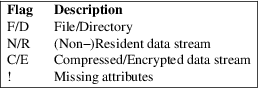

ntfsundelete − recover a deleted file from an NTFS volume.
ntfsundelete [options] device
ntfsundelete has three modes of operation: scan, undelete and copy.
Scan
The default mode, scan simply reads an NTFS Volume
and looks for files that have been deleted. Then it will
print a list giving the inode number, name and size.
Undelete
The undelete mode takes the files either matching the
regular expression (option −m) or specified by the
inode−expressions and recovers as much of the data as
possible. It saves the result to another location. Partly
for safety, but mostly because NTFS write support
isn’t finished.
Copy
This is a wizard’s option. It will save a portion of
the MFT to a file. This probably only be useful when
debugging ntfsundelete
Notes
ntfsundelete only ever reads from the NTFS
Volume. ntfsundelete will never change the
volume.
Miracles
ntfsundelete cannot perform the impossible.
When a file is deleted the MFT Record is marked as not in use and the bitmap representing the disk usage is updated. If the power isn’t turned off immediately, the free space, where the file used to live, may become overwritten. Worse, the MFT Record may be reused for another file. If this happens it is impossible to tell where the file was on disk.
Even if all the clusters of a file are not in use, there is no guarantee that they haven’t been overwritten by some short−lived file.
Locale
In NTFS all the filenames are stored as Unicode. They will
be converted into the current locale for display by
ntfsundelete. The utility has successfully displayed
some Chinese pictogram filenames and then correctly
recovered them.
Extended MFT
Records
In rare circumstances, a single MFT Record will not be large
enough to hold the metadata describing a file (a file would
have to be in hundreds of fragments for this to happen). In
these cases one MFT record may hold the filename, but
another will hold the information about the data.
ntfsundelete will not try and piece together such
records. It will simply show unnamed files with data.
Compressed
and Encrypted Files
ntfsundelete cannot recover compressed or encrypted
files. When scanning for them, it will display as being 0%
recoverable.
The
Recovered File’s Size and Date
To recover a file ntfsundelete has to read the
file’s metadata. Unfortunately, this isn’t
always intact. When a file is deleted, the metadata can be
left in an inconsistent state. e.g. the file size may be
zero; the dates of the file may be set to the time it was
deleted, or random.
To be safe ntfsundelete will pick the largest file
size it finds and write that to disk. It will also try and
set the file’s date to the last modified date. This
date may be the correct last modified date, or something
unexpected.
Below is a
summary of all the options that ntfsundelete accepts.
Nearly all options have two equivalent names. The short name
is preceded by − and the long name is preceded
by −−. Any single letter options, that
don’t take an argument, can be combined into a single
command, e.g. −fv is equivalent to −f
−v. Long named options can be abbreviated to any
unique prefix of their name.
−b, −−byte NUM
If any clusters of the file cannot be recovered, the missing parts will be filled with this byte. The default is zeros.
−C, −−case
When scanning an NTFS volume, any filename matching (using the −−match option) is case−insensitive. This option makes the matching case−sensitive.
−c, −−copy RANGE
This wizard’s option will write a block of MFT FILE records to a file. The default file is mft which will be created in the current directory. This option can be combined with the −−output and −−destination options.
−d, −−destination DIR
This option controls where to put the output file of the −−undelete and −−copy options.
−f, −−force
This will override some sensible defaults, such as not overwriting an existing file. Use this option with caution.
−h, −−help
Show a list of options with a brief description of each one.
−i, −−inodes RANGE
Recover the files with these inode numbers. RANGE can be a single inode number, several numbers separated by commas "," or a range separated by a dash "−".
−m, −−match PATTERN
Filter the output by only looking for matching filenames. The pattern can include the wildcards ’?’, match exactly one character or ’*’, match zero or more characters. By default the matching is case−insensitive. To make the search case sensitive, use the −−case option.
−O, −−optimistic
Recover parts of the file even if they are currently marked as in use.
−o, −−output FILE
Use this option to set name of output file that −−undelete or −−copy will create.
−P, −−parent
Display the parent directory of a deleted file.
−p, −−percentage NUM
Filter the output of the −−scan option, by only matching files with a certain amount of recoverable content. Please read the caveats section for more details.
−q, −−quiet
Reduce the amount of output to a minimum. Naturally, it doesn’t make sense to combine this option with −−scan.
−s, −−scan
Search through an NTFS volume and print a list of files that could be recovered. This is the default action of ntfsundelete. This list can be filtered by filename, size, percentage recoverable or last modification time, using the −−match, −−size, −−percent and −−time options, respectively.
The output of scan will be:
Inode Flags
%age Date Time Size Filename
6038 FN.. 93% 2002−07−17 13:42 26629
thesis.doc

The percentage field shows how much of the file can potentially be recovered.
−S, −−size RANGE
Filter the output of the −−scan option, by looking for a particular range of file sizes. The range may be specified as two numbers separated by a ’−’. The sizes may be abbreviated using the suffixes k, m, g, t, for kilobytes, megabytes, gigabytes and terabytes respectively.
−t, −−time SINCE
Filter the output of the −−scan option. Only match files that have been altered since this time. The time must be given as number using a suffix of d, w, m, y for days, weeks, months or years ago.
−T, −−truncate
If ntfsundelete is confident about the size of a deleted file, then it will restore the file to exactly that size. The default behaviour is to round up the size to the nearest cluster (which will be a multiple of 512 bytes).
−u, −−undelete
Select undelete mode. You can specify the files to be recovered using by using −−match or −−inodes options. This option can be combined with −−output, −−destination, and −−byte.
When the file is recovered it will be given its original name, unless the −−output option is used.
−v, −−verbose
Increase the amount of output that ntfsundelete prints.
−V, −−version
Show the version number, copyright and license for ntfsundelete.
Look for deleted files on /dev/hda1.
ntfsundelete /dev/hda1
Look for deleted documents on /dev/hda1.
ntfsundelete /dev/hda1 −s −m ’*.doc’
Look for deleted files between 5000 and 6000000 bytes, with at least 90% of the data recoverable, on /dev/hda1.
ntfsundelete /dev/hda1 −S 5k−6m −p 90
Look for deleted files altered in the last two days
ntfsundelete /dev/hda1 −t 2d
Undelete inodes 2, 5 and 100 to 131 of device /dev/sda1
ntfsundelete /dev/sda1 −u −i 2,5,100−131
Undelete inode number 3689, call the file ’work.doc’, set it to recovered size and put it in the user’s home directory.
ntfsundelete /dev/hda1 −u −T −i 3689 −o work.doc −d ~
Save MFT Records 3689 to 3690 to a file ’debug’
ntfsundelete /dev/hda1 −c 3689−3690 −o debug
There are some
small limitations to ntfsundelete, but currently no
known bugs. If you find a bug please send an email
describing the problem to the development team:
ntfs−3g−devel@lists.sf.net
ntfsundelete was written by Richard Russon and Holger Ohmacht, with contributions from Anton Altaparmakov. It was ported to ntfs-3g by Erik Larsson and Jean-Pierre Andre.
ntfsundelete
is part of the ntfs-3g package and is available from:
https://github.com/tuxera/ntfs-3g/wiki/
ntfsinfo(8), ntfsprogs(8)